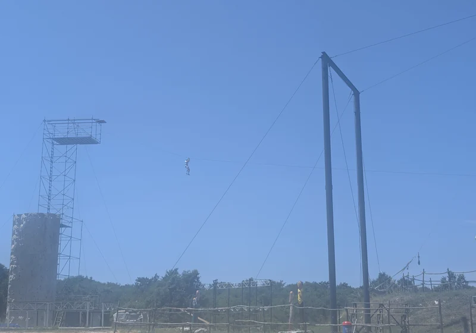
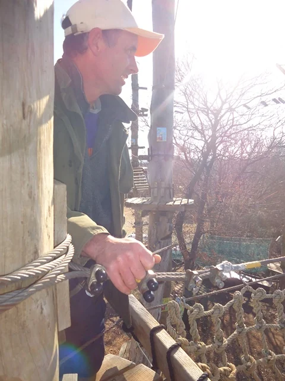

Valley Zip Line Course
Glavani Park's Valley Zip Line Course sends you on two zip line runs back and forth over the valley through the oak forest, reaching heights of up to 20 metres. You clip in with park staff, receive a launch briefing, and glide between platforms with views across the valley.
The course is popular with first-time zipliners and returning visitors alike. Harness and helmet are provided; wear closed shoes and comfortable clothing. Combine with the Treetop Course on the high-ropes routes for a full zipline experience in one visit.
Valley Zip Line video
The course shown in this video is an earlier version. The Valley Zip Line has since been upgraded — today's experience includes two zip lines back and forth over the valley.
120 metres through the valley — up to 20 metres high
The Valley Zip Line is a standalone experience — two runs back and forth across the oak valley, reaching up to 20 metres high. You get forest and park views that photos rarely capture. First-timers receive extra guidance at the launch platform.
What to wear and how long it takes
Closed shoes and comfortable clothing are essential. Allow 30–60 minutes including briefing and queue. Returning visitors often cite the valley zipline as their favourite ride.
Plan a full day
Pairs naturally with the Treetop Course, High Swing, and Human Catapult. Book or see prices.
Planning your visit
Glavani Park is at Glavani 10, Barban — about 30 minutes from Pula, 45 minutes from Rovinj and Rabac, and 50 minutes from Poreč. Free parking is on site. The park is open daily 9 AM–5 PM with last entry at 3 PM, so allow three to four hours for the whole park.
For Valley Zip Line Course and our other attractions you can book tickets online for groups up to 10 or call ahead for larger parties. See packages and prices — whole park incl. catapult €60–70 (children/adults), whole park without catapult €40–50, training route + 2 games €20–30, family packages from €150.
Safety and equipment
Every activity at Glavani Park is instructor-led. Equipment is CE-certified and checked daily. You receive a harness, helmet, and clear briefing before you start. Read more on our safety page.
Packages from €20 children / €30 adults · book online for up to 10
Visitor photos — Valley Zip Line Course


